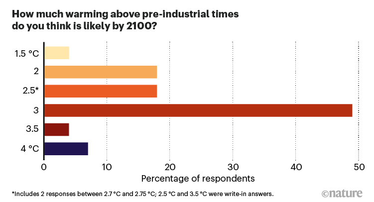
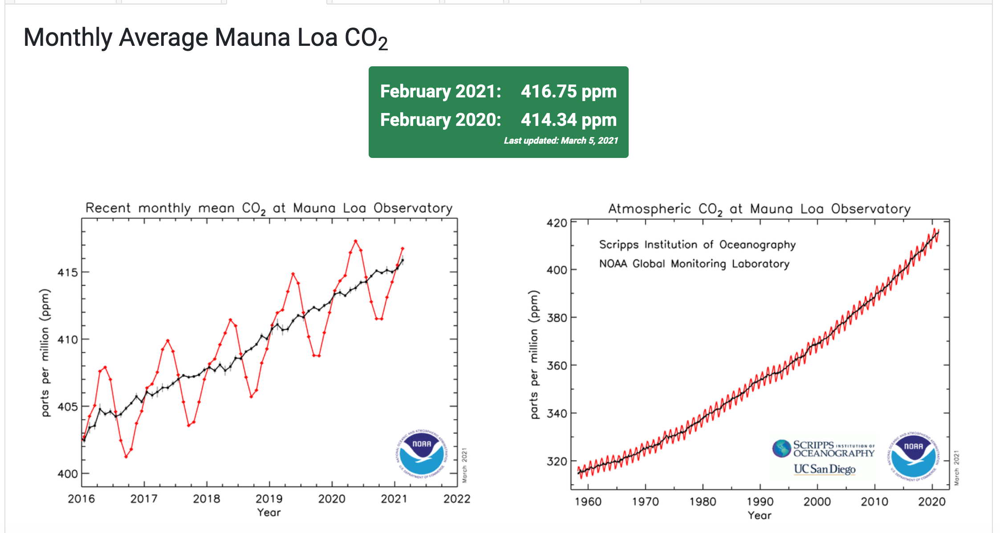
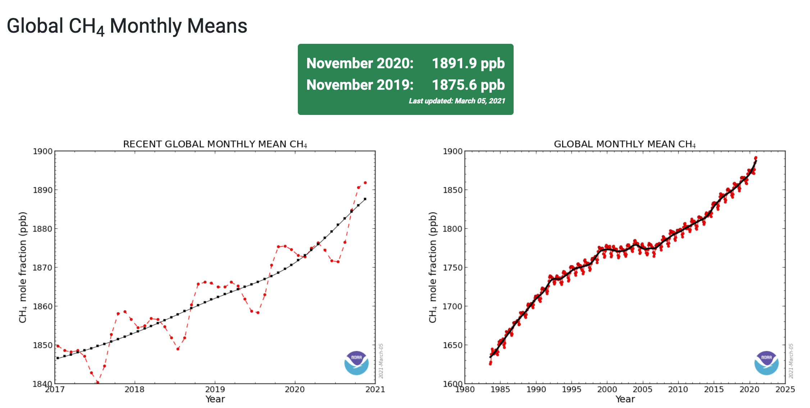
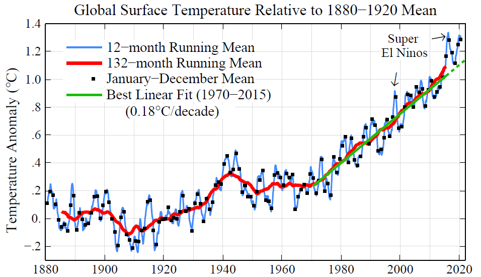

D NEWS
D.1 230908 Antarctica Polar Amplification
Antarctica is likely warming at almost twice the rate of the rest of the world and faster than climate change models are predicting, with potentially far-reaching implications for global sea level rise.
Scientists analysed 78 Antarctic ice cores to recreate temperatures going back 1,000 years and found the warming across the continent was outside what could be expected from natural swings.
In West Antarctica, a region considered particularly vulnerable to warming with an ice sheet that could push up global sea levels by several metres if it collapsed, the study found warming at twice the rate suggested by climate models.
Climate scientists have long expected that polar regions would warm faster than the rest of the planet – a phenomenon known as polar amplification – and this has been seen in the Arctic.
Antarctica was warming at a rate of between 0.22C and 0.32C per decade, compared to 0.18C per decade predicted by climate models.
Part of the warming in Antarctica is likely being masked by a change in a pattern of winds – also thought to be linked to global heating and the loss of ozone over the continent – that has tended to reduce temperatures.
D.2 230116 No US Green Monetary Policy - but EU?
Jay Powell has said the Federal Reserve will not become a “climate policymaker”, as he mounted a full-throated defence of the US central bank’s independence from political influence.
In a speech delivered on Tuesday, the Fed chair said the central bank must steer clear of issues outside its congressionally mandated purview and instead maintain a narrow focus on keeping consumer prices stable, fostering a healthy labour market and ensuring the safety of the country’s banking system.
“It is essential that we stick to our statutory goals and authorities, and that we resist the temptation to broaden our scope to address other important social issues of the day,” he said at a conference hosted by Sweden’s central bank. “Without explicit congressional legislation, it would be inappropriate for us to use our monetary policy or supervisory tools to promote a greener economy or to achieve other climate-based goals.” He added: “We are not, and will not be, a ‘climate policymaker’.”
At the same event, Isabel Schnabel, a member of the six-person executive board of the European Central Bank, advocated greater action to address climate change.
The German economist pledged to “ensure that all of the ECB’s policies are aligned with the objectives of the Paris Agreement to limit global warming to well below 2C”. The ECB’s position is clear. It worries that high interest rates to control inflation will undermine the green transition by raising the cost of investing in wind, solar, hydrogen and other clean energies necessary for moving to a net zero carbon world.
But ECB and Fed are aligned on two important issues:
First, that the primary role of green intervention lies not with independent central banks but with governments. Powell said that “in a well-functioning democracy, important public policy decisions should be made, in almost all cases, by the elected branches of government”. Schnabel concurred, saying, “governments must remain in the lead in accelerating the green transition”.
Second, they agree central banks have a role when supervising the banking system in ensuring commercial banks understand and manage financial risks from global warming. These include weather-related risks to infrastructure that banks have financed or fossil fuel assets that might become near-worthless in future.
D.3 211104 Global CO2 emissions have been flat for a decade, new data reveals
Global carbon dioxide (CO2) emissions from fossil fuels and cement have rebounded by 4.9% this year, new estimates suggest, following a Covid-related dip of 5.4% in 2020.
The Global Carbon Project (GCP) projects that fossil emissions in 2021 will reach 36.4bn tonnes of CO2 (GtCO2), only 0.8% below their pre-pandemic high of 36.7GtCO2 in 2019.
The researchers say they “were expecting some sort of rebound in 2021” as the global economy bounced back from Covid-19, but that it was “bigger than expected”.
While fossil emissions are expected to return to near-record levels, the study also reassesses historical emissions from land-use change, revealing that global CO2 output overall may have been effectively flat over the past decade.
The 2021 GCP almost halves the estimate of net emissions from land-use change over the past two years – and by an average of 25% over the past decade.
These changes come from an update to underlying land-use datasets that lower estimates of cropland expansion, particularly in tropical regions. Emissions from land-use change in the new GCP dataset have been decreasing by around 4% per year over the past decade, compared to an increase of 1.8% per year in the prior version.
However, the GCP authors caution that uncertainties in land-use change emissions remain large and “this trend remains to be confirmed”.
D.4 211104 Top climate scientists are sceptical that nations will rein in global warming
Nature conducted an anonymous survey of the 233 living IPCC authors last month and received responses from 92 scientists — about 40% of the group. Their answers suggest strong scepticism that governments will markedly slow the pace of global warming, despite political promises made by international leaders as part of the 2015 Paris climate agreement.
Six in ten of the respondents said that they expect the world to warm by at least 3 °C by the end of the century, compared with what conditions were like before the Industrial Revolution. That is far beyond the Paris agreement’s goal to limit warming to 1.5–2 °C.

Most of the survey’s respondents — 88% — said they think global warming constitutes a ‘crisis’, and nearly as many said they expect to see catastrophic impacts of climate change in their lifetimes.
D.5 210921 Microsoft CO2-removal
In January this year, Microsoft made a major announcement: it had paid for the removal of 1.3 million tonnes of carbon dioxide from the atmosphere. Among its purchases were projects to expand forests in Peru, Nicaragua and the United States, as well as initiatives to regenerate soil across US farms. Microsoft will pay the Swiss firm Climeworks to operate a machine in Iceland that pulls CO2 from the air and injects it into the ground, where it mineralizes and turns to stone. The amount of CO2 to be removed is equivalent to about 11% of the annual emissions from Microsoft’s value chain; of this, the company will count less than half as being certified to officially compensate for its emissions. It is the largest corporate procurement of carbon removal so far.
Microsoft did this as part of its 2020 commitment to slash its greenhouse-gas emissions to ‘net zero’ — as one of more than 120 nations and 1,500 companies to set such goals1. By 2030, the company will reduce its emissions by half or more, and will have 100% of its electricity consumption matched by zero-carbon energy purchases. It will electrify its vehicle fleet, stop using diesel for backup energy and reduce emissions across its value chain. Emissions that are harder to abate, including historical emissions, will be compensated for by withdrawing carbon from the atmosphere. The firm is levying an internal carbon tax across all types of greenhouse-gas emission. It has set up a US$1-billion fund to invest in carbon reduction and removal technologies, and partnerships to provide social and environmental benefits. The aim is that, by 2030, the company will be carbon negative. By 2050, it will have removed all of its emissions since it was founded in 1975.
Here we summarize the lessons learnt from Microsoft’s carbon-removal efforts, along with those from another early corporate procurement — the $9-million purchases of carbon removal in 2020 and 2021 by the US–Irish financial-infrastructure company Stripe. Although these are just two companies’ efforts, they are the first significant open solicitations focused exclusively on carbon removal. We write as a team composed of Microsoft staff working on the company’s carbon-negative programme and research scientists who analyse carbon reduction and removal strategies.
We highlight three ‘bugs’ in the current system: inconsistent definitions of net zero, poor measurement and accounting of carbon, and an immature market in CO2 removal and offsets. These challenges need to be overcome if the world is to reach net zero by mid-century.
D.6 210909 ORCA turned on - Iceland
The world’s largest plant designed to suck carbon dioxide out of the air and turn it into rock has started running, the companies behind the project said on Wednesday.
The plant, named Orca after the Icelandic word “orka” meaning “energy”, consists of four units, each made up of two metal boxes that look like shipping containers.
Constructed by Switzerland’s Climeworks and Iceland’s Carbfix, when operating at capacity the plant will draw 4,000 tonnes of carbon dioxide out of the air every year, according to the companies. The climate crisis requires a new culture and politics, not just new tech Peter Sutoris Read more
According to the US Environmental Protection Agency, that equates to the emissions from about 870 cars. The plant cost between US$10 and 15m to build, Bloomberg reported.
To collect the carbon dioxide, the plant uses fans to draw air into a collector, which has a filter material inside.
Once the filter material is filled with CO2, the collector is closed and the temperature is raised to release the CO2 from the material, after which the highly concentrated gas can be collected.
The CO2 is then mixed with the water before being injected at a depth of 1,000 metres into the nearby basalt rock where it is mineralised.
D.7 210715 Arctic Sea Ice at Record Low
ARCTIC SEA ICE AT RECORD LOW for this time of year. This is an enormous source of amplifying feedback. Losing the remaining Arctic sea ice and its reflection of solar energy back to space would be equivalent to another one trillion tons of CO2.
D.8 210526 Dutch Court against Shell
This is a real ruling: it includes Scope 3 emissions.
Rechtspraak
De rechtbank Den Haag beveelt Royal Dutch Shell (RDS) om via het concernbeleid van de Shell-groep de CO2-uitstoot eind 2030 terug te brengen tot netto 45% ten opzichte van het niveau van 2019.
D.9 210509 NDCs need 80% increase to 2°C
On current trends, the probability of staying below 2 °C of warming is only 5%
D.10 210508 Young Legal Action
The young people taking their countries to court over climate inaction
Children and young adults around the world are demanding action from governments on global heating and the ecological crisis,
D.11 210424 Earth’s Axis tilted by Melting Glaciers
Since the 1990s, the loss of hundreds of billions of tonnes of ice a year into the oceans resulting from the climate crisis has caused the poles to move in new directions.
The direction of polar drift shifted from southward to eastward in 1995 and that the average speed of drift from 1995 to 2020 was 17 times faster than from 1981 to 1995.
Since 1980, the position of the poles has moved about 4 metres in distance.
The accelerated decline [in water stored on land] resulting from glacial ice melting is the main driver of the rapid polar drift after the 1990s.
D.12 210410 CO2 and Methane surged in 2020
Levels of the two most important anthropogenic greenhouse gases, carbon dioxide and methane, continued their unrelenting rise in 2020 despite the economic slowdown caused by the coronavirus pandemic response.
CO2
The global surface average for carbon dioxide (CO2), calculated from measurements collected at NOAA’s remote sampling locations, was 412.5 parts per million (ppm) in 2020, rising by 2.6 ppm during the year. The global rate of increase was the fifth-highest in NOAA’s 63-year record, following 1987, 1998, 2015 and 2016. The annual mean at NOAA’s Mauna Loa Observatory in Hawaii was 414.4 ppm during 2020.
The economic recession was estimated to have reduced carbon emissions by about 7 percent during 2020. Without the economic slowdown, the 2020 increase would have been the highest on record, according to Pieter Tans, senior scientist at NOAA’s Global Monitoring Laboratory. Since 2000, the global CO2 average has grown by 43.5 ppm, an increase of 12 percent.
The atmospheric burden of CO2 is now comparable to where it was during the Mid-Pliocene Warm Period around 3.6 million years ago, when concentrations of carbon dioxide ranged from about 380 to 450 parts per million. During that time sea level was about 78 feet higher than today, the average temperature was 7 degrees Fahrenheit higher than in pre-industrial times, and studies indicate large forests occupied areas of the Arctic that are now tundra.

Methane
Analysis of samples from 2020 also showed a significant jump in the atmospheric burden of methane, which is far less abundant but 28 times more potent than CO2 at trapping heat over a 100-year time frame. NOAA’s preliminary analysis showed the annual increase in atmospheric methane for 2020 was 14.7 parts per billion (ppb), which is the largest annual increase recorded since systematic measurements began in 1983. The global average burden of methane for December 2020, the last month for which data has been analyzed, was 1892.3 ppb. That would represent an increase of about 119 ppb, or 6 percent, since 2000.

D.13 210404 Gas Sustainability
**Scientifically Sustainable*
The European Commission is attempting to finish its sustainable finance taxonomy, a landmark regulation that from next year will define what can be labelled as a sustainable investment in the EU.
A leaked proposal for the rules, shared with EU states last week, would label as sustainable some gas plants that generate power and also provide heating or cooling. That came after the Commission’s original proposal – which denied natural gas-fuelled power plants a green label, following the recommendation of the bloc’s expert advisers – faced resistance from some EU countries.
Nine members of the expert group advising the European Union on its sustainable finance rules have threatened to step down if Brussels pushes ahead with plans that they say would discredit its efforts to fight climate change.
EU countries disagree on what role natural gas should play in meeting climate goals. Gas emits roughly half the CO2 of coal when burned in power plants, but gas infrastructure is associated with leaks of methane, a potent greenhouse gas.
“The concept of what is scientifically sustainable, that’s really not for politicians to decide,” said Andreas Hoepner, a professor at University College Dublin who signed the letter.
D.14 210220 US SCC Update in Progress
In its 2013 revision of the SCC, the Obama IWG arrived at a central value of around US$50 per tonne of CO2 emitted in 2020 (all values expressed in today’s dollars). It also established a range for the SCC ($15–75) and presented an estimate at the 95th percentile ($150). The time is ripe for this update,
That IWG did a careful job, but devastating storms and wildfires are now more common, and costs are mounting. Advances in attribution science mean that researchers can now link many more extreme weather events directly to climate change, and new econometric techniques help to quantify the dollar impacts. The monetary losses exceed the predictions of early models. The same goes for sea-level rise and many other types of damage.
Plenty of scientific and economic judgements need to be made. These include how to deal with endemic uncertainties, including sudden and irreversible ‘tipping points’, such as ice-sheet collapses. Ethical questions must be considered, including the consequences for vulnerable communities and future generations.
Revising the SCC will take extensive research. A 2017 study by the US National Academies of Sciences, Engineering, and Medicine proposed building a new climate-economy model based on modules — separate components that handle climate change, socio-economic projections, damages, valuation and discounting
Other nations use widely different SCC values or overall approaches2. Germany’s 2020 guidance presented two values: €195 (US$235) and €680 ($820). Some countries instead establish a goal for emissions reductions (such as the United Kingdom’s 68% reduction by 2030 compared to 1990 levels) and then focus on minimizing the costs of achieving it, estimated at $20–100 per tonne of CO2. This is called a target-consistent approach.
D.15 210215 Focus on Steel, Meat and Cement
Bill Gates has written about Climate Change.
His assessment is that there is not the time, money or political will to reconfigure the energy sector in 10 years, and encouraging an impossible goal dooms the world to short-term measures that prove insufficient.
Crucially, people need to radically change how they produce the worst climate offenders: steel, meat and cement. Making steel and cement accounts for roughly 10% of all global emissions, and beef alone 4%.
D.16 210127 10 New Insights in Climate Science 2020
Someof which are:
● Earth’s temperature response to doubling the levels of carbon dioxide in the atmosphere is now better understood. While previous IPCC assessments have used an estimated range of 1.5–4.5°C, recent research now suggests a narrower range of 2.3–4.5°C.
● Emissions of greenhouse gases from permafrost will be larger than earlier projections because of abrupt thaw processes, which are not yet included in global climate models.
● Global plant biomass uptake of carbon due to CO 2 fertilization may be limited in the future by nitrogen and phosphorus.
● Rights-based litigation is emerging as a tool to address climate change.
Moving forward, the latest research calls for innovative, imaginative, and transformative approaches to building sustainable and resilient human societies. For instance, by strengthening global cooperative frameworks and building new governance arrangements that can include bottom-up community initiatives. In the short term, we have a one-off opportunity to get on the right path by directing post-pandemic recovery spending to green investments. If the focus is instead on economic growth, with sustainability as an afterthought, it would jeopardize our ability to deliver on the Paris Agreement. Alarmingly, governments do not yet seem to be seizing the opportunity to shift towards low-carbon, healthier, and more resilient societies.
D.17 210130 Adaptation Summit
Climate change adaptation seems to be a fairly new concept to many leaders. It were sometimes mix-ups with mitigation during the high-level talks. Mitigation and adaptation are both important and sometimes they overlap, so mix-ups are understandable. Climate adaptation involves many communities and disciplines (e.g. weather forecasting, climate services, regional climate modelling, “distillation“, disaster risk reduction).
Financing is clearly needed for climate change adaptation. To ensure progress and avoid lofty visions without results on the ground, there may also be a need for tangible results and to show examples and demonstrations. One specific type discussed at the summit was “Early warning systems” which play an important role.
But early warning systems, the way I understand them, don’t provide information about climate risks on longer timescales. Weather and climate – short and long timescales – are of course connected but nevertheless different
D.18 210118 Warming all anthropogenic
Parties to the Paris Agreement agreed to holding global average temperature increases “well below 2 °C above pre-industrial levels and pursuing efforts to limit the temperature increase to 1.5 °C above pre-industrial levels”. Monitoring the contributions of human-induced climate forcings to warming so far is key to understanding progress towards these goals. Here we use climate model simulations from the Detection and Attribution Model Intercomparison Project, as well as regularized optimal fingerprinting, to show that anthropogenic forcings caused 0.9 to 1.3 °C of warming in global mean near-surface air temperature in 2010–2019 relative to 1850–1900, compared with an observed warming of 1.1 °C. Greenhouse gases and aerosols contributed changes of 1.2 to 1.9 °C and −0.7 to −0.1 °C, respectively, and natural forcings contributed negligibly. These results demonstrate the substantial human influence on climate so far and the urgency of action needed to meet the Paris Agreement goals.
D.19 21014 Globale Temperature 1880-2020

The rate of global warming has accelerated in the past several years. The 2020 global temperature was +1.3°C (~2.3°F) warmer than in the 1880-1920 base period; global temperature in that base period is a reasonable estimate of ‘pre-industrial’ temperature. The six warmest years in the GISS record all occur in the past six years, and the 10 warmest years are all in the 21st century. Growth rates of the greenhouse gases driving global warming are increasing, not declining.
[GISSTEMP 2020 Update] (https://mailchi.mp/caa/global-temperature-in-2020?e=96d59a909f)
D.20 210104 Not so long lag?
Until recently, Mann explained in The Guardian, scientists believed the climate system—a catch-all term for the interaction among the Earth’s atmosphere, oceans, and other parts of the biosphere—carried a long lag effect. This lag effect was mainly a function of carbon dioxide remaining in the atmosphere and trapping heat for many decades after being emitted. So, even if humanity halted all CO2 emissions overnight, average global temperatures would continue to rise for 25 to 30 years, while also driving more intense heat waves, droughts, and other climate impacts. Halting emissions will take at least twenty years, under the best of circumstances, and so humanity was likely locked in to at least 50 more years of rising temperatures and impacts.
Research over the past ten years, however, has revised this vision of the climate system. Scientists used to “treat carbon dioxide in the atmosphere as if it was a simple control knob that you turn up” and temperatures climb accordingly, “but in the real world we now know that’s not what happens,” Mann said. Instead, if humans “stop emitting carbon right now … the oceans start to take up carbon more rapidly.” The actual lag effect between halting CO2 emissions and halting temperature rise, then, is not 25 to 30 years but, per Mann, “more like three to five years.” (October 2020)
D.21 210102 Climate Finance Shadow Report 2020
Oxfam has released this report with subtitle Asessing progress towards the $100 billion commitment Progress is NOT in line with need or pledges.
Climate change could undo decades of progress in development and dramatically increase global inequalities. There is an urgent need for climate finance to help countries cope and adapt. Over a decade ago, developed countries committed to mobilize $100bn per year by 2020 to support developing countries to adapt and reduce their emissions. The goal is a critical part of the Paris Agreement. As 2020 draws to a close, Oxfam’s Climate Finance Shadow Report 2020 offers an assessment of progress towards the $100bn goal.
Based on 2017–18 reported numbers, developed countries are likely to claim they are on track to meet the $100bn goal. And on their own terms, they may be. But how the goal is met is as important as whether it is met. The dubious veracity of reported numbers, the extent to which climate finance is increasing developing country indebtedness, and the enduring gap in support for adaptation, LDCs and SIDS, are grave concerns. Meeting the $100bn goal on these terms would be cause for concern, not celebration.